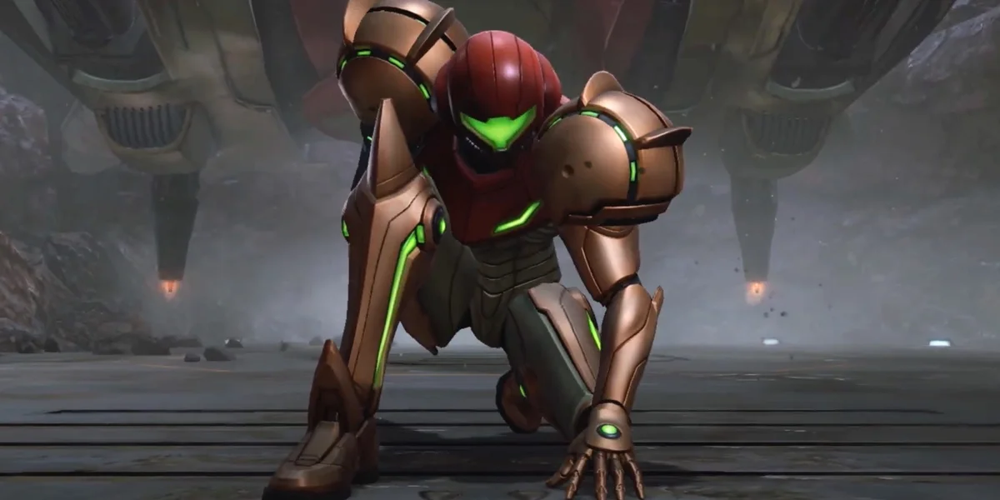
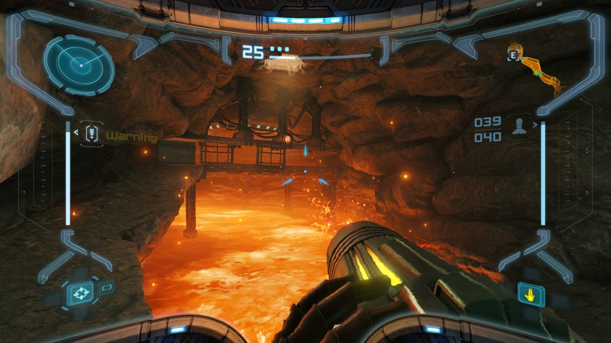
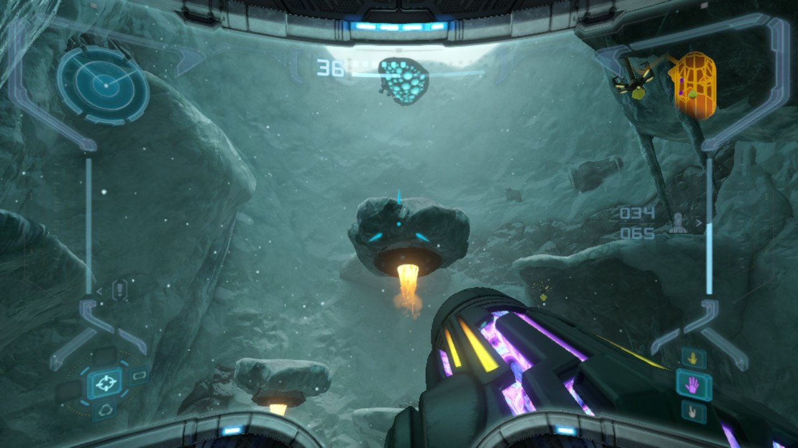

Metriod Prime
Metroid Prime is a critically acclaimed first-person adventure game developed by Retro Studios and published by Nintendo. It was originally released for the Nintendo GameCube in 2002 and is part of the long-running Metroid series. The game blends exploration, puzzle-solving, and combat into a rich experience with an emphasis on immersive world-building. Metroid Prime was remastered on the Nintendo Switch in 2023 for enhanced visual and a smoother gameplay introducing a whole new generation of players to the fold.
story
Metroid Prime follows Samus Aran, a bounty hunter, as she investigates the planet Tallon IV after a distress signal is received. She uncovers a dangerous force called the Phazon, a substance that mutates life forms and is being exploited by the Space Pirates. Samus’s mission is to stop their plans and uncover the mystery behind Phazon, exploring various environments on the planet along the way.Setting
 The setting of Metroid Prime is primarily located on the mysterious planet Tallon IV, a remote world rich in ancient history, diverse environments, and dangerous wildlife. The planet is divided into several distinct areas, each with its unique atmosphere, challenges, and lore. Here's an overview of the key settings in Metroid Prime: Bosses
 Metroid Prime features several iconic and challenging bosses that serve as key encounters throughout the game. These
bosses test your combat skills, puzzle-solving abilities, and mastery of Samus's various upgrades
.
Metroid Prime features several iconic and challenging bosses that serve as key encounters throughout the game. These
bosses test your combat skills, puzzle-solving abilities, and mastery of Samus's various upgrades
.